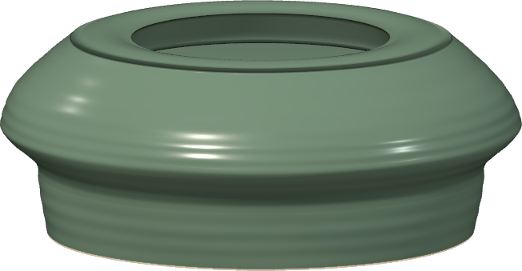
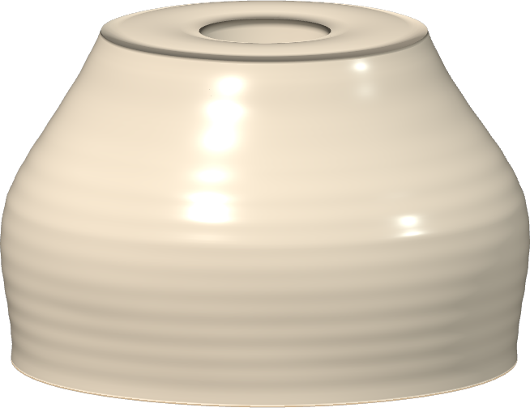

LOCAL REVIEW · OCTOBER 11A full coat, a finer brush.
Glaze now connects the brush strokes, lays down a stronger coat, and offers an undoable base coat. Final firing brings out the glossy finish. These are actual exported pieces made during testing.
Try the updated studio →
Green bowl
EARLIER ATTEMPT Patchy coverage after repeated brush passes.FULL CELADON COAT · FIRED
Patchy coverage after repeated brush passes.FULL CELADON COAT · FIRED
Continuous color across the outside, rim and interior. Save image
White jar
EARLIER ATTEMPT The earlier brush-painted jar.FULL CHALK COAT · FIRED
The earlier brush-painted jar.FULL CHALK COAT · FIRED
One base coat, followed by the final firing. Save image
The silhouettes remain approximations. Hands now lets the inner opening follow a neck squeeze, with wall-thickness safeguards intact. More refinement is still needed to make a spherical moon jar easy to form. Handle attachment is still a separate next step.
The shelf now uses IndexedDB and preserves the previous browser-storage collection. Automated browser checks cover opaque coverage, fine-stroke continuity, Undo/Redo, phase guards and saved-image recovery. Responsive checks use browser viewports; physical-device performance remains unverified.